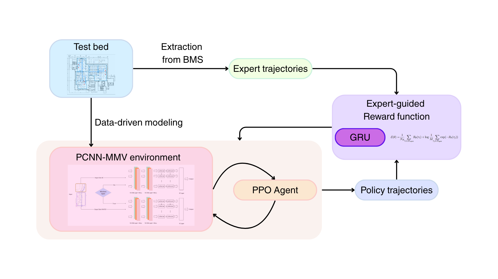
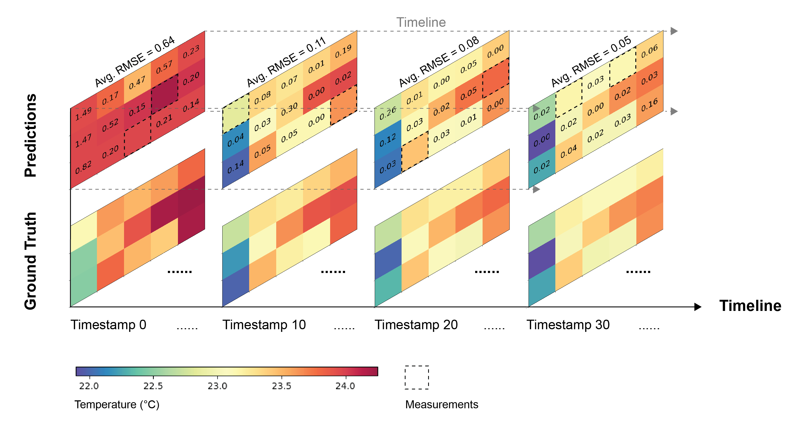


Wei Liang
Senior Research Fellow, IDEAS Lab,
National University of Singapore
Registered Professional Engineer,
State of California
IDEAS Lab
College of Design and Engineering
National University of Singapore
8 Architecture Dr, #03-02
Singapore 117564
I'm a senior research fellow in IDEAS Lab at the National University of Singapore (NUS) and a professional mechanical engineer licensed in the State of California, USA. My research interests include robotic and IoT applications for building management, building performance modeling, and building controls and diagnostics.
I obtained my Ph.D. at Carnegie Mellon University, my M.Sc at University of California, Merced, and my B.Sc at Nanjing University.
For the most up-to-date research and publications, please check my Google Scholar and ResearchGate pages.
news
| Aug 2026 | I'm honored to have been selected to the Youth Editorial Board of Building Simulation. |
|---|---|
| Mar 2026 | Delivered a seminar on AI in Building Controls at Korea University. |
| Dec 2025 | Moderated the CEPT–NUS workshop at SDE4. |
| Nov 2025 | Spoke at the Tsinghua Shenzhen Graduate School–NUS workshop at SDE4. |
| Oct 2025 | Serving on the Scientific Committee of the 6th Asia Conference of the International Building Performance Simulation Association (ASim 2026). |
| Jul 2025 | Presented our work on adaptive mixed-mode ventilation at the ICML CO-BUILD Workshop. |
| Jun 2025 | I'm humbled to have been promoted to Senior Research Fellow. |
| Jun 2025 | Attended the 2025 ASHRAE Annual Meeting. |
| Apr 2025 | Advanced to Full Member of ASHRAE. |
| Jul 2024 | Delighted to share that I have joined IDEAS Lab at NUS as a Research Fellow. |
| Jun 2024 | Spoke at the 2024 ASHRAE Annual Meeting. |
| Jun 2024 | Presented our mean radiant temperature mapping work at the CVPR 2024 CV4AEC workshop. |
| May 2024 | Relieved and grateful to have successfully defended my PhD thesis, An Automatic Mobile Sensing Platform for Indoor Environmental Quality Assessments. |
selected publications
-

Adversarial inverse reinforcement learning control for mixed-mode ventilation systems with physics-constrained neural networkEnergy and Buildings, 2026 -

-

Energy flexibility quantification of a tropical net-zero office building using physically consistent neural network-based model predictive controlAdvances in Applied Energy, 2024